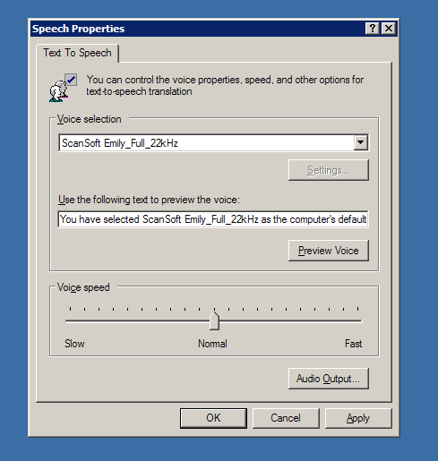

Turning Speech On
The Teacher Toolkit uses Microsoft's built in Text-To-Speech engine.
If this is not installed/activated on your pc, you will need to activate it.
To do this, you need to access the SPEECH options via your system's CONTROL PANEL:

This is different depending on the version of Windows you are using - please make use of the Internet to find out how to turn on the Text-To-Speech feature on your computer.
You may also need to search the Internet to find and install a Speech Application Programming Interface (SAPI), but this is included with most pc installations.
Although your computer has a built in voice, there are many more free ones you can download and install. We would highly recommend this, as some of the free voices are quite natural sounding, instead of the robotic one which comes with your computer.
Some possible Internet links to free voices:
http://www.zero2000.com/free-text-to-speech-natural-voices.html
http://www.nextup.com/TextAloud/SpeechEngine/voices.html#morefreevoices
http://dimio.altervista.org/eng/